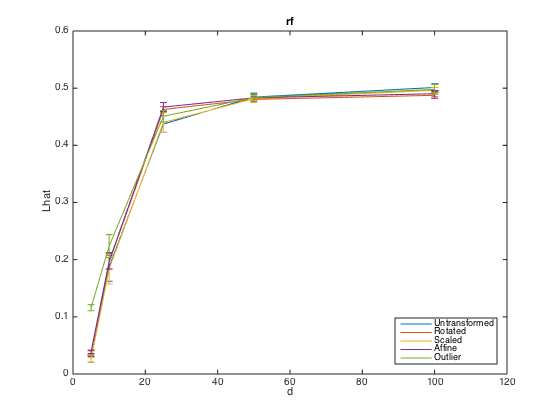
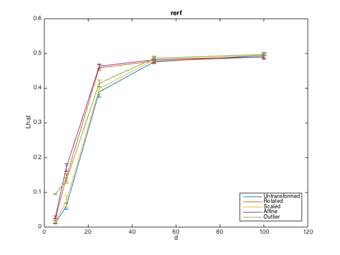
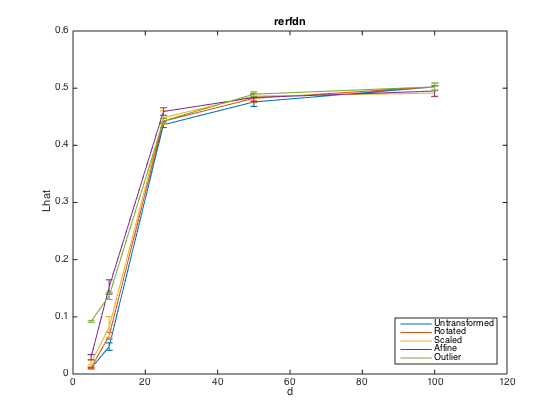
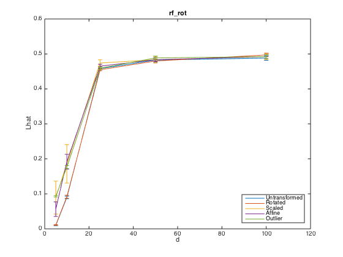

Plot Sparse Parity Transformations
clear close all clc runSims = false; if runSims run_Sparse_parity_transformations else load ~/Sparse_parity_transformations end Transformations = fieldnames(mean_err_rf); YLower = NaN(1,length(Transformations)); YUpper = NaN(1,length(Transformations)); for j = 1:length(Transformations) Transform = Transformations{j}; [Lhat.rf,minIdx.rf] = min(mean_err_rf.(Transform)(end,:,:),[],2); [Lhat.rerf,minIdx.rerf] = min(mean_err_rerf.(Transform)(end,:,:),[],2); [Lhat.rerfdn,minIdx.rerfdn] = min(mean_err_rerfdn.(Transform)(end,:,:),[],2); [Lhat.rf_rot,minIdx.rf_rot] = min(mean_err_rf_rot.(Transform)(end,:,:),[],2); for i = 1:length(dims) sem.rf(i) = sem_rf.(Transform)(end,minIdx.rf(i),i); sem.rerf(i) = sem_rerf.(Transform)(end,minIdx.rerf(i),i); sem.rerfdn(i) = sem_rerfdn.(Transform)(end,minIdx.rerfdn(i),i); sem.rf_rot(i) = sem_rf_rot.(Transform)(end,minIdx.rf_rot(i),i); end classifiers = fieldnames(Lhat); for i = 1:length(classifiers) cl = classifiers{i}; figure(i) h(i) = errorbar(dims,Lhat.(cl)(:)',sem.(cl)); hold on end end for i = 1:length(classifiers) figure(i) xlabel('d') ylabel('Lhat') title(classifiers{i},'Interpreter','none') legend('Untransformed','Rotated','Scaled','Affine','Outlier','Location','southeast') ax(i) = gca; YLower(i) = ax(i).YLim(1); YUpper(i) = ax(i).YLim(2); end YLower = min(YLower); YUpper = max(YUpper); for i = 1:length(classifiers) ax(i).YLim = [YLower YUpper]; save_fig(gcf,['~/RandomerForest/Figures/Sparse_parity_transformations_' classifiers{i}]) end   